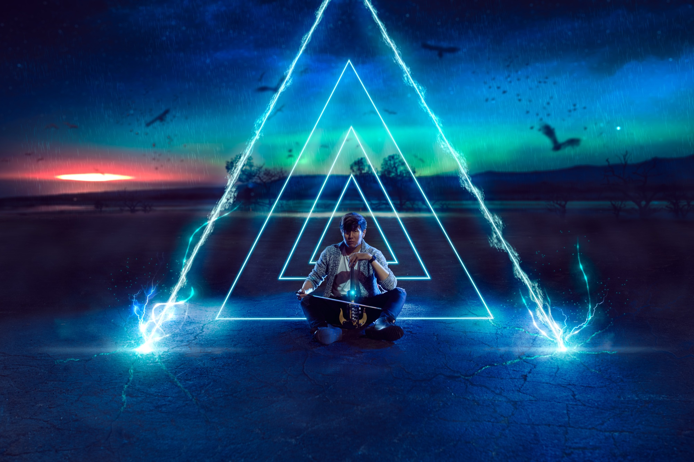

Alex Ahn
Classically trained in Atlanta, Alex Ahn has played violin for over three decades. Over time he’s evolved beyond the rigid confines of classical music into a free-flowing style inspired by Atlanta’s vibrant culture — continually redefining what the instrument can be.